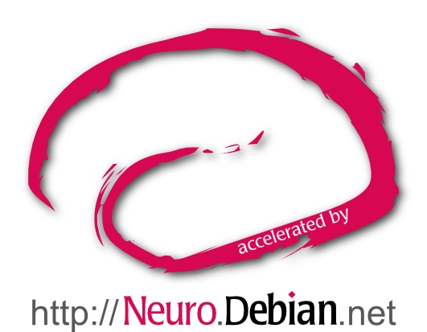
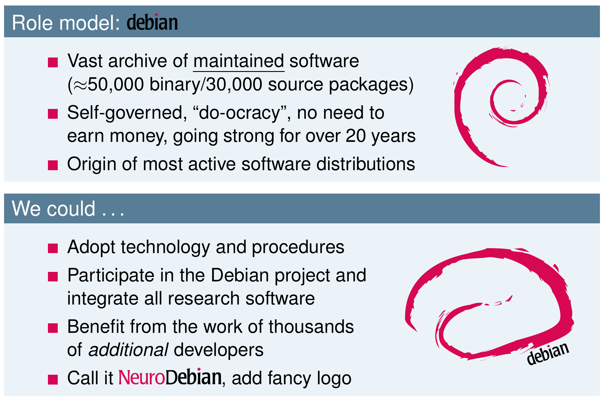
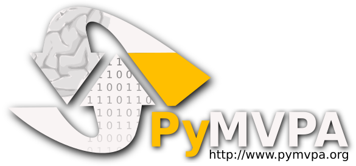

WiP Reuse, Compose, Extend, Standardize, Automate
Two Decades of RSEing Open (Neuro)Science at CON
|
Yaroslav O. Halchenko + Cody Baker, Austin Macdonald, Isaac To, Vadim Melnik — the CON team  @yarikoptic @yarikoptic
|
|
|
Center for Open Neuroscience Department of Psychological and Brain Sciences Center for Cognitive Neuroscience Dartmouth College New Hampshire, USA 
|
Live slides/Sources: https://datasets.datalad.org/centerforopenneuroscience/talks/2026-usrse-con-talk.html


It’s 2026. AI writes code.
AI tends to produce silos.
“AI exemplifies silo projects.”
— Codeberg Community: “Protecting our FLOSS commons from LLMs”
The antidote has a name.
REUSE
COMPOSE
EXTEND
STANDARDIZE
AUTOMATE
“We’ve been building this immune system for 20 years.”
“It started as an accident.”
“2000. A neuroscience grad student joins a Debian developer’s lab.”
Fernando Perez was building IPython in the same open-science community. Same instinct: reuse the ecosystem, not just the code.
2000 — Barak Pearlmutter’s lab. Debian immersion.
2005 — pkg-exppsy. Packaging FSL + PyEPL with Michael Hanke.
2007 — PyMVPA. Full test suite + CI before it was common.
2009 — NeuroDebian. Born by joining Debian, not forking it.
2013 — DataLad. Git + git-annex for everything.
2016 — BIDS. Co-founding a community data standard.
2024+ — STAMPED · DANDI · EMBER · ORINOCO-Lite.
Seven milestones. Five verbs. Two decades.
Two decades, five verbs
| Reuse | join an upstream instead of writing one |
| Compose | small modules over silo’d monoliths |
| Extend | stay on as maintainer of what you depend on |
| Standardize | a common language — for humans and agents |
| Automate | if you don’t, it doesn’t happen at scale |
REUSE
The cheapest reproducible thing is the one you didn’t have to build.

Y. O. Halchenko and M. Hanke. Open is not enough. Let's take the next step: An integrated, community-driven computing platform for neuroscience. Frontiers in Neuroinformatics, 6(00022), 2012. doi: 10.3389/fninf.2012.00022
Born by joining Debian. Not forking it.
NeuroDebian: a textbook bridge

Eventually most of it dissolved upstream into Debian Med, Debian Science, and conda-forge. A successful bridge dissolves into the commons.

M. Hanke, Y. O. Halchenko, P. B. Sederberg, et al. PyMVPA: A Python toolbox for multivariate pattern analysis of fMRI data. Neuroinformatics, 7:37–53, 2009. doi: 10.1007/s12021-008-9041-y
2007. Full test suite. CI. Tutorials. Before it was common.
duecredit
Automated scholarly credit tracking.
con/duct
Process monitor. Wall time. Memory. Per task.
citations-collector
Citation harvesting for your stack.
One upstream search pass saves a thousand local fixes.
REUSE
Debian DEP-5 → REUSE spec: machine-readable licensing, per file.
/introduce-reuse-complianceWe reuse the standard and automate its adoption.
“What if AI attribution worked the same way?”
SPDX-FileContributor: assisted-by-ai: Claude Code 2.1 / Claude Sonnet 4.6File-level AI provenance that survives redistribution.
We filed the issue.
“Agents don’t search. They generate.”
Reuse requires asking “does this exist?” before the first keystroke.
REUSE
Compose — small modules, common substrate
Sandwich, don't silo.
The DataLad sandwich
Layered tech that everyone already knows
graph TB
user --> datalad[datalad get file] --> git-annex[git-annex get file] -.-> git-annex-remote-archives --> git-annex2[git-annex get --key XXX.tar.gz] -.-> git-annex-remote-datalad
datalad --> git1[git]
git-annex --> git2[git]
git-annex2 --> git3[git]
classDef green fill:#40bf4c,stroke:#333,stroke-width:1px;
classDef orange fill:#ffa200,stroke:#333,stroke-width:1px;
classDef red fill:#f44d27,stroke:#333,stroke-width:1px;
class datalad orange
class git-annex-remote-archives orange
class git-annex-remote-datalad orange
class git-annex green
class git-annex2 green
class git red
class git1 red
class git2 red
class git3 red
DataLad: distributed system for joint management of code, data, and their relationship. Halchenko et al., JOSS 2021.
DataLad extensions: domain-agnostic core, à la carte add-ons
graph LR datalad --> datalad-crawler datalad --> datalad-container datalad --> datalad-neuroimaging datalad --> datalad-osf datalad --> datalad-fuse datalad --> datalad-xnat datalad --> datalad-ukbiobank datalad --> datalad-next datalad --> ... classDef orange fill:#ffa200,stroke:#333,stroke-width:1px; classDef orangy fill:#ffc200,stroke:#333,stroke-width:1px; class datalad orange class datalad-crawler orangy class datalad-container orangy class datalad-neuroimaging orangy class datalad-osf orangy class datalad-fuse orangy class datalad-xnat orangy class datalad-ukbiobank orangy class datalad-next orangy
Extensions = separate Python packages, ride on datalad-extension-template — your domain plugs in, neuroimaging is just one of many.
Federate, don’t recentralize

registry.datalad.org indexes DataLad datasets across institutions and clouds — discovery over petabytes, no platform required.
ReproIn + HeuDiConv
Acquire reproducibly.
Sequence naming convention at the scanner → DICOM → BIDS, no human in the loop.
NeuroConv + nwb2bids
Convert once, use everywhere.
Raw physiology → NWB; NWB → BIDS layout. Two flagship standards, one bridge.
ReproNim/containers
Pinned environments. Everywhere.
Curated Singularity/Apptainer containers, auto-rebuilt and auto-snapshotted.
Small units. Common substrate.
No glue code you own alone.
“AI generates glue. Nobody owns the glue.”
Deliberate interfaces outlast generated adapters.
COMPOSE
Extend — stay on as maintainer
Ship pragmatic now, formalize upstream later.
Debian Med
Packaging. Still there.
pkg-exppsy → NeuroDebian → Debian Med & Debian Science → conda-forge.
A successful bridge dissolves into the commons.
BIDS Steering Group + WG-16
Advisory. Standards evolution.
Co-evolving the standard, not just consuming it.
BEP028: DataLad’s ad-hoc
RUNCMD provenance lifting into BIDS.
NWB + Kitware
Academic RSE ↔ engineering industry.
Sustained collaboration on browse / analyze / visualize tooling.
From ad-hoc to standard, in one slide
flowchart LR RUNCMD["DataLad RUNCMD
(2015, ad-hoc JSON in commit msgs)"] --> BEP["BEP028
BIDS provenance"] RUNCMD --> EXP["bids-prov-exporter
(WiP)"] BEP --> COMMUNITY["BIDS standard
(community-owned)"] EXP --> COMMUNITY classDef orange fill:#ffa200,stroke:#333,stroke-width:1px; classDef green fill:#40bf4c,stroke:#333,stroke-width:1px; class RUNCMD orange class BEP green class COMMUNITY green
Take home: the next time you reach for your own JSON-in-a-commit-message format, ask which upstream standard it should fold back into.
“AI extends by adding. It rarely stays to maintain.”
Staying on as maintainer is the non-automatable contribution.
EXTEND
Standardize — a language for HI and AI
All standards are “bad”*, but some are used.
* — D. Clunie, MICCAI 2017.
Data: BIDS & NWB
Gorgolewski, K. J., Auer, T., …, Halchenko, Y. O., …, Poldrack, R. A. (2016). The brain imaging data structure, a format for organizing and describing outputs of neuroimaging experiments. Scientific Data, 3:160044.
You've seen one BIDS dataset, you've seen them all. That's the point.
BIDS as a meta-standard

Not a wire format — a contract. Validators, BIDS-Apps, BEPs all hang off it.
NWB — Neurodata Without Borders

Standard for neurophysiology. Same principle.
M
Schema. Machine-readable. Deterministically validatable.
C
Tools that operate on the Model.
V
Use-case views on the same data.
Examples: lab website, reports, discovery portals
Same M → endless C and V.
This is why standards compound.

For research objects, we wrote the standard ourselves. stamped-principles.org
“Without standards, AI produces cacophony at scale.”
Standards are the framing and validation layer for any AI endeavor.
One instance of the pattern:
lab knowledge management.
LinkML
Schemas that compose.
Built 2 hours north, at LBNL (Lawrence Berkeley National Laboratory).
Reused identifier, not invented.
Reused identifier, not invented.
Reused identifier, not invented.
ORINOCO → ORINOCO-Lite
INM-7 Jülich → CON, GitHub-native
Reusing ORINOCO (Michael Hanke / INM-7) and composing with GitHub Actions/Pages.
AI drafts candidate records.
Schema validates.
Humans curate via PR.
Posters this week:
ORINOCO-Lite · STAMPED · con/duct
Come find us.
Standards give both HI and AI a shared grammar.
STANDARDIZE
National archives. Built on shared standards.
What's in DANDI

DANDI ecosystem — integrate, don't re-implement

Reuse, in reverse
Your data is yours, even when someone else hosts it.
Pull content back into git + git-annex
|
AnnexTube YouTube videos + transcripts + comments → DataLad/git-annex. Demo: ReproTube. |
mykrok Personal knowledge bag — pulls Google & cloud silos back into a versioned local archive. |
con/serve “The Vault”: a configuration-driven archival of Slack, Zoom, GitHub, AI sessions, … into DataLad subdatasets. |
WiP — Wayback archive
(under con/serve): a local archive of the Internet Archive’s
archive of your project’s archive — in case the IA itself goes away.
Reuse-in-reverse, with a safety net.
Take home: pick one commercial silo your group depends on.
Set up a one-shot pull-back into a git+git-annex archive.
You'll thank yourself in two years.
Automate — or it doesn’t happen at scale
If a human has to remember it, it’s already broken.
con/tinuous
“CI logs archived. Every PR. Every build.”

git-annex daily tests
“DataLad and git-annex: tested daily. Automatically.”

ReproNim/containers
“Auto-rebuilt. Auto-snapshotted. Always current.”
dandisets mirror
“Auto-mirrored. Petabytes. No human in the loop.”

Cost: harnesses, harnesses, harnesses
Each automation is itself code — CI YAML, hooks, nightly cron, deploy scripts, glue. Someone maintains that.
By 2024 the harness was bigger than several of the projects under it.
That is why a small RSE center was dragged toward AI assistance
— not for the science, but for the
maintenance of the meta-layer.
con/skills + con/yolo: we automate the harness itself.
“The tests don’t know the code was AI-generated.”
“Agent-rate output demands agent-rate review.”
“con/duct watches every process. AI agents included.”

con/duct — wall time, CPU, memory, per task. Per agent run.
“con/tinuous archives every run. AI-assisted runs included.”
“datalad run records every transformation.
Agent-written or hand-written.”
“Provenance doesn’t care who wrote the code.”
AUTOMATE
REUSE · COMPOSE · EXTEND
STANDARDIZE · AUTOMATE
“These are not 20-year-old advice.”
They are the load-bearing structure for the age of AI.
AI makes going alone tempting.
Fast. Flexible. Free of dependencies.
You are alone.
Together.
A hundred agentic projects reinventing the same infrastructure…
…is a hundred times the debt.
One collaborative ecosystem.
DANDI
BIDS
DataLad
OpenNeuro
NWB
EMBER
microscopy · behavior
HI ↔ AI — every project picks its own policy
| Stance | OSS exemplars | CON / adjacent example | SciOps fit / what it relies on |
|---|---|---|---|
| 1. Reject any AI-generated content | Zig, Krita, Clojure, QEMU; in practice git-annex (Joey Hess’s “policy” is famously a satirical Feb-30 joke) | git-annex upstream contributions — pure-HI commits | L3 floor; AI use, if any, stays ephemeral — never enters the tracked artifact |
| 2. Accept with disclosure (AI-assisted ok; must be marked) | NumPy, Kubernetes, Linux kernel, Django | DataLad, DANDI — HI commits; AI may have helped; Co-Authored-By: Claude… trailers, @pytest.mark.ai_generated |
L3 → L4; leans hardest on STAMPED T (Tracking) — provenance is non-negotiable |
| 3. Spec-driven AI-generated (HI specs, AI writes, HI reviews) | Increasingly common; rare as declared upstream policy | AnnexTube, mykrok, con/citations-collector, parts of dandi-cli (LAD specs + AI-generated tests) | L4; leans on T + Actionability + Modularity — the spec is the contract |
| 4. Autonomous agents in the loop | Active research everywhere; rarely a declared production policy | con/skills + con/yolo workflows for triage, PR review, dep updates | L5 (Optimizing); all of STAMPED + the harness itself becomes the type-checker |
Common ground (all four stances): AI cannot be an author (ICMJE Jan 2026); humans retain full responsibility; AI use must be disclosed in the artifact itself (commit trailer, methods section, acknowledgments). The STAMPED Tracking principle is what makes that mechanical instead of aspirational.
Survey of declared OSS stances: melissawm/open-source-ai-contribution-policies — community-maintained catalog.
Others are formalizing this too.
“Networked Intelligence: Active Shared Context Graphs
for Human-AI Team Science”
Pryor, R. et al. (2026). arXiv:2607.13220
“Scale the connections, not just the agents.”
The principles don’t change. The urgency does.
Together we can make neuroscience a better science!
Acknowledgements
|
Funders


Collaborators
|

Thank you!
Reuse. Compose. Extend. Standardize. Automate.
Slides: datasets.datalad.org/…/2026-usrse-con-talk.html — CC-BY-SA